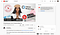
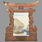

Magnetic BookShelf
A Book Dojo book-driven physical Product

Trying to find physical products that could go with the data-driven books that book Dojo will publish led to Book as Wallpaper but seeing this picture today's I discovered another better and more useful product which is a magnetic bookshelf so your data-driven books will stick there on your wall supported by this magnetic bookshelf that has the shape of this Japanese wood furniture. Being empathic with others is really useful and leads to clearer insights as a gift from who you are empathic with. I really was willing to an article for this woman software engineer and had already the whole article idea that is about showcasing some creative datascience concepts that could be used to know more about someone using youtube videos with the help of computer vision, geographic data, and other digital data as features of a machine learning system. All the ideas are there in my mind but I was so tired of these last words I had written that I postponed it to a later time. But now I just received this recommendation from Youtube and set up the reminder for viewing it.

But the Coding Dojo logo on the video thumbnail image reminded me of Book Dojo and I got the idea of magnetic bookshelf and promptly started writing this. I take it as a gift for the good intention I had to do something good for another one. In this case this leading woman software engineer.
Thank you
PS: I thought it could be wood made like how Japanese wood types of furniture are shaped but don't still know if book lovers will like it.
like this but simple shape without the snakes

This article sounds like this data-driven book
If you want to part of those who will experience this data-driven book provide your email using this form